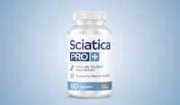

Sciatica Pro Scam or Legit? The Shocking Truth Exposed (2026 Review)

Click Here to Check Official Batch Availability →| Product Name: | Sciatica Pro |
| Editorial Score: | 4.8 / 5.0 ⭐⭐⭐⭐⭐ |
| Primary Purpose: | Targeted Bioactive Health & Vitality Formula (Natural Health & Dietary Supplement) |
| Manufacturing / Delivery: | c-GMP Certified, FDA-Registered Facility (USA) |
| Guarantee Shield: | 100% Risk-Free Money-Back Guarantee |
| Availability: | Official Manufacturer Site Only |
Sciatica Pro+ Reviews & Complaints 2026 | Is It Effective?
Sciatica Pro+ is a natural supplement formulated to support nerve health, lessen sciatica discomfort, and improve mobility with high-potency active components.
Sciatica Pro+ – Quick Overview | |
Product Name | Sciatica Pro+ |
Type | Dietary Supplement |
Form | Veggie Capsules |
Natural Formula | Yes, formulated with natural ingredients like vitamins, botanicals, and antioxidants. |
Key Benefits |
|
Customer Reviews | Positive reviews praising its effectiveness in reducing sciatica pain and improving overall mobility. |
Dosage | Take 2 veggie capsules once a day |
Side Effects | No reported side effects |
Money-Back Guarantee | 180-day, 100% money-back guarantee |
Official Website | |
In this review, she explores Sciatica Pro+’s formula, benefits, and real-world effectiveness, providing you with the insights you need to determine if it’s truly a valuable solution for sciatica relief. Let’s get started! 🚀
What Is Sciatica Pro+?
Sciatica Pro+ is a specialized dietary supplement formulated to support nerve health and provide relief from sciatica-related discomfort.
It combines essential nutrients with traditional wellness botanicals in an easy-to-take capsule form, offering a holistic approach to nerve care.
This supplement is thoughtfully formulated to help customers struggling with nerve sensitivity, discomfort in the lower back and legs, or difficulty moving due to sciatic nerve issues.
By supporting healthy nerve function, Sciatica Pro+ promotes better mobility, improved comfort, and a greater sense of well-being throughout your daily schedule.
It is manufactured in a state-of-the-art, GMP-certified facility in the USA, Sciatica Pro+ reflects a strong commitment to safety, quality, and purity.
The Science Behind Sciatica Pro+
Sciatica Pro+ is grounded in a science-backed approach to supporting nerve health, mobility, and overall wellness.
The formula combines essential nutrients and traditional herbal compounds known for promoting nerve function and reducing discomfort associated with sciatic nerve issues.
The blend works by supporting the body’s natural ability to nourish and shield nerve tissue, helping to maintain healthy communication between thebrainand the rest of the body.
It also aims to ease physical tension and support a balanced inflammatory response, which is critical for customers experiencing lower back or leg discomfort related to the sciatic nerve.
This commitment to science and safety means you can trust the product as a reliable part of your wellness routine, with a formula designed not just to mask symptoms, but to support the root of nerve health over time.
Sciatica Pro+ Ingredients
Sciatica Pro+ features a thoughtfully selected combination of vitamins, amino acids, and herbal extracts that work together to support healthy nerve function, lessen discomfort, and promote overall well-being. Here’s a detailed look at the key active components and how they contribute to the formula’s effectiveness:
Vitamin D3
- Vitamin D3 plays a vital role in maintaining bone and muscle strength, which is essential for supporting spinal health. It also helps regulate immune and inflammatory responses, which can directly influence nerve discomfort and mobility issues related to sciatica.
Vitamin B6
- This vitamin is crucial for proper nerve signaling and function. It helps support neurotransmitter activity and protects the covering of nerves (the myelin sheath), making it especially helpful in relieving nerve irritation or sensitivity.
Folate (Folic Acid)
- Folate supports cellular regeneration and nerve repair. It plays a role in maintaining healthy red blood cells and ensuring oxygen delivery to nerve tissues, which is important for long-term nerve health and recovery.
Vitamin B12
- Vitamin B12 is well known for its role in nerve regeneration and reducing nerve pain. A deficiency in B12 is commonly linked to neuropathy, and its inclusion in this formula helps restore proper nerve function and reduce symptoms like tingling or numbness.
Alpha Lipoic Acid (ALA)
- ALA is a powerful antioxidant that helps combat oxidative stress, which can damage nerve cells over time. It also improves blood flow to the nerves and supports the reduction of burning, pain, or numbness often associated with nerve discomfort.
Benfotiamine
- A fat-soluble form of vitamin B1, Benfotiamine is known for its superior absorption and ability to support nerve repair. It plays a key role in protecting nerves from damage, especially in cases of chronic discomfort or inflammation.
Acetyl L-Carnitine (ALCAR)
- Acetyl L-Carnitine (ALCAR) supports energy production within nerve cells and has been shown to help reduce pain, improve nerve regeneration, and enhance cognitive and physical performance. It is especially beneficial for those with long-standing nerve issues.
Ashwagandha Powder (Root)
- A traditional adaptogen, Ashwagandha helps reduce physical and emotional stress, which can contribute to nerve inflammation. It supports relaxation, balanced mood, and hormonal harmony, creating a calming environment for nerve healing.
Broccoli Powder
- Rich in antioxidants and phytonutrients, broccoli supports detoxification and healthy inflammation levels. It also provides essential nutrients that contribute to overall immune function and cellular health.
Turmeric Powder
- Turmeric contains curcumin, a natural anti-inflammatory compound that helps ease discomfort and stiffness. Its role in reducing inflammation makes it a powerful support ingredient for managing sciatica-related symptoms and enhancing joint and nerve health.
Benefits
Sciatica Pro+ offers a extensive range of benefits formulated to support your nerve health, enhance mobility, and improve overall quality of life. This daily supplement is ideal for those experiencing sciatic nerve discomfort or anyone looking to maintain healthy nerve function over time.
- Supports Healthy Nerve Function: Sciatica Pro+ promotes the repair and protection of nerve tissues, helping to improve nerve signaling and reduce the discomfort often associated with sciatica.
- Promotes Relief from Sciatica-Related Discomfort: The formula is specifically designed to target lower back, leg, and nerve pain by supporting a healthy inflammatory response and easing nerve sensitivity.
- Enhances Mobility and Flexibility: By reducing nerve tension and supporting joint and muscle comfort, Sciatica Pro+ helps you move more freely and with less pain.
- Reduces Occasional Inflammation Naturally: With ingredients known for their anti-inflammatory properties, it helps the body manage inflammation that can aggravate nerve issues.
- Boosts Energy and Vitality: The combination of vitamins and natural compounds helps fight fatigue and supports energy production, making it easier to stay active and alert throughout the day.
- Supports Daily Wellness: Sciatica Pro+ fits seamlessly into your daily health routine, providing your body with ongoing support for nerve and overall well-being.
Pros
- Supports overall nerve health and function
- Helps relieve sciatica-related discomfort
- Promotes better mobility and flexibility
- Reduces occasional inflammation naturally
- Boosts energy and mental clarity
- Easy-to-take once-daily veggie capsules
- Made in a GMP-certified facility in the USA
- Backed by a 180-day money-back guarantee
- Includes natural and scientifically backed ingredients
- No artificial fillers or harmful additives
- Suitable for daily wellness and long-term use
- Free shipping and a bonus gift with select packages
Cons
- Only available for purchase online
- Results may vary between individuals
- Premium pricing without discounts for a single-bottle purchase
How to Use?
For best results, take two (2) vegetable capsules once daily as a dietary supplement.
It is recommended to take the capsules 20–30 minutes before a meal with a full 8-oz. glass of water. This ensures optimal absorption and effectiveness of the active components.
Sciatica Pro+ is formulated to fit easily into your daily schedule, providing consistent support for nerve health and comfort. Be sure to take it regularly for at least several weeks to experience the full benefits.
Are There Any Side Effects?
Sciatica Pro+ is formulated using natural, high-quality active components and is manufactured in a GMP-certified facility in the USA, ensuring safety and purity.
To date, no side effects have been reported by users of the supplement. It is formulated to be gentle on the body and suitable for daily use.
However, as with any dietary supplement, customers with medical conditions, those taking medications, or pregnant or nursing women should consult with a healthcare professional before use. Overall, Sciatica Pro+ is considered safe and well-tolerated when used as directed.
Is Sciatica Pro+ a Scam or Legit?
✅ Yes, Sciatica Pro+ is Legit
Sciatica Pro+ is a legitimate supplement that has been carefully formulated with scientifically backed active components to support nerve health and alleviate sciatica discomfort.
It is manufactured in a GMP-certified facility in the USA, ensuring high standards of quality and safety. The product is sold with a 180-day money-back guarantee, offering customers clarity and calm. There have been no reported scams or issues with the product. Customers can confidently trust Sciatica Pro+ for its effectiveness and integrity.
❌ No, It is Not a Scam
Sciatica Pro+ is made in the USA in a GMP-certified facility. The product is well-received by customers and offers a money-back guarantee.
Sciatica Pro+ Customer Reviews & Complaints
Sciatica Pro+ has garnered overwhelmingly positive reviews and high ratings from users, showcasing its effectiveness and popularity.
⭐Positive Reviews
“I was skeptical about trying another supplement. But after taking Sciatica Pro+, my pain vanished. If you’re in pain, you owe it to yourself to give this a try.”
Margaret Thompson, 68, Denver, Colorado — Verified Customer
“I couldn’t sit, stand, or walk. But I’ve been taking Sciatica Pro+ for a month now, and I haven’t experienced ANY pain since!”
Linda Chen, 49, Seattle, Washington — Verified Customer
“Within weeks of taking Sciatica Pro+, my pain had significantly decreased. And after just a few months, I was completely PAIN FREE! I no longer have to take opioids.”
Robert Hernandez, 57, Miami, Florida — Verified Customer
⚠️Common Complaints
Jane R. – USA
“I started taking Sciatica Pro+ but didn’t feel a huge difference for the first couple of weeks. However, after sticking with it, I did start noticing less discomfort in my legs. I would have liked to see quicker results, but it eventually worked.”
David P. – Australia
“I had high hopes for this product, but I found it a bit expensive compared to other supplements. While it did help with my sciatic nerve pain, I think the price could be a bit more competitive for the single bottle option.”
Is Sciatica Pro+ an Effective Option?
Yes, Sciatica Pro+ is an efficient option for supporting nerve health. It combines a carefully selected blend of essential nutrients and natural botanicals, formulated to promote nerve function, lessen inflammation, and alleviate discomfort associated with sciatica.
By targeting the root causes of nerve issues, it helps improve mobility, lessen tension, and support overall well-being. Many users report noticeable improvements in their ability to move more freely and experience less discomfort.
With its high-quality active components and a 180-day money-back guarantee, Sciatica Pro+ is a trusted choice for those seeking relief and nerve health support.
Money Back Guarantee
Sciatica Pro+ offers a 180-day, 100% money-back guarantee to ensure customer satisfaction. If you’re not thrilled with the results or don’t experience the improvements you expect, simply contact the customer support team within 180 days for a full refund.
No hassles, no questions asked, and you can even keep any bonuses you received. This risk-free guarantee reflects the company’s confidence in the product and its commitment to your satisfaction.
Pricing
Sciatica Pro+ offers three flexible package options to suit your needs:
- Basic Package: 1 Bottle (30-day Supply) for $69.
- Best Value: 6 Bottles (180-day Supply) for $49 per bottle (Save $300), Free Shipping.
- Great Value: 3 Bottles (90-day Supply) for $59 per bottle (Save $120), Free Shipping.
Where to Buy?
Sciatica Pro+ is only available for purchase on the official website. This ensures that customers are getting the authentic product directly from the manufacturer, guaranteeing quality and safety.
By purchasing from the official website, you also receive access to special offers, including discounted bundle packages, free shipping, and a 180-day money-back guarantee.
Additionally, purchasing through the official site ensures customer support and eligibility for any bonuses or promotional gifts. To ensure the best deal and avoid counterfeit products, it’s recommended to buy Sciatica Pro+ only from the official website.
Conclusion
Sciatica Pro+ boasts a 4.79 out of 5-star rating, based on over 2000 reviews, indicating high levels of user satisfaction.
After thoroughly examining Sciatica Pro+ and its benefits, I can confidently recommend it as a reliable and efficient option for those dealing with sciatica and nerve health issues.
The combination of scientifically backed active components and natural botanicals grants extensive support for improving mobility, reducing discomfort, and promoting overall nerve health.
What stands out is the 180-day money-back guarantee, which allows you to try the product risk-free and experience the results for yourself.
If you’ve been struggling with sciatica or nerve discomfort, Sciatica Pro+ is worth considering as a natural, safe solution to improve your quality of life. I encourage you to give it a try, your body and well-being deserve it!
Frequently Asked Questions
Is Sciatica Pro+ safe?
Yes, Sciatica Pro+ is made with high-quality, natural active components and manufactured in a GMP-certified facility in the USA, ensuring safety and purity.
How long does it take to see results?
Results vary, but most users report noticeable improvements after 2-3 weeks of consistent use.
Is Sciatica Pro+ suitable for long-term use?
Yes, Sciatica Pro+ is designed for long-term use, with active components that support nerve health over time. However, it’s always a good idea to consult with your doctor if you plan on using it long-term.
What makes Sciatica Pro+ different from other supplements?
Sciatica Pro+ stands out due to its unique blend of essential vitamins, natural herbs, and antioxidants designed specifically for nerve health. Plus, it is made in a GMP-certified facility in the USA and comes with a money-back guarantee.
Does Sciatica Pro+ contain any artificial additives?
No, Sciatica Pro+ is made with all-natural active components and contains no artificial additives, preservatives, or harmful chemicals.
.